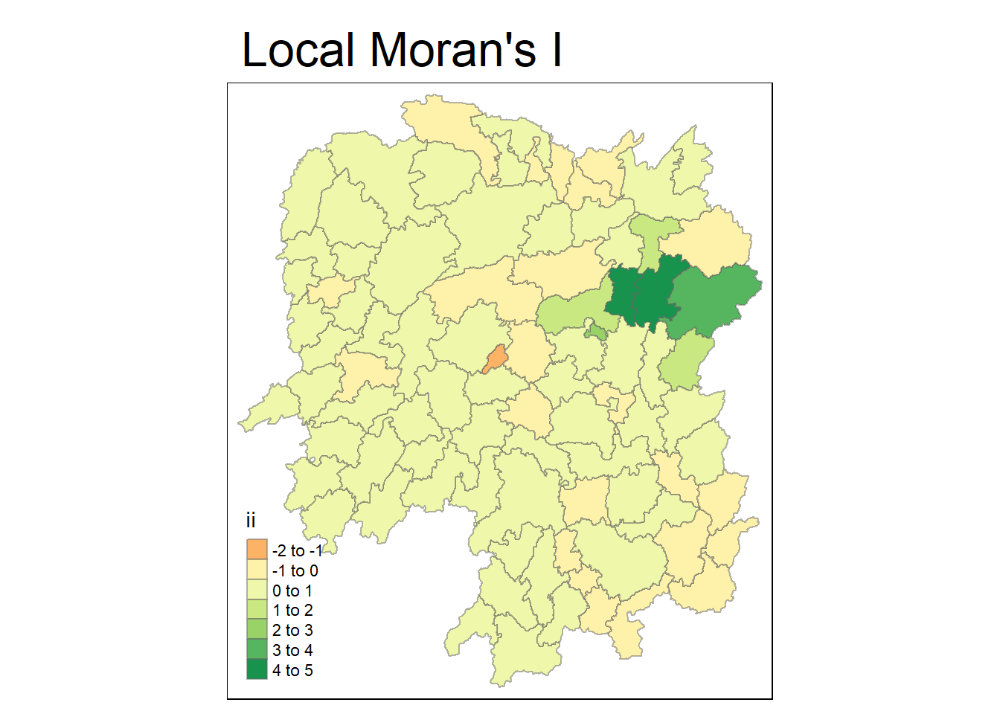

pacman::p_load(sf, tidyverse, tmap, sfdep)In-class Exercise 6
2.0 Loading in the necessary packages
In this exercise, we will be exploring a new package, sfdep.
2.1 importing the data
2.1.1 Importing the Hunan shapefiles
hunan4<-st_read(dsn="data/geospatial",
layer="Hunan")Reading layer `Hunan' from data source
`C:\santhyats\IS415-GAA\In-class_Ex\In-class_Ex06\data\geospatial'
using driver `ESRI Shapefile'
Simple feature collection with 88 features and 7 fields
Geometry type: POLYGON
Dimension: XY
Bounding box: xmin: 108.7831 ymin: 24.6342 xmax: 114.2544 ymax: 30.12812
Geodetic CRS: WGS 842.1.2 importing the csv file
hunan4_2012<- read_csv("data/aspatial/Hunan_2012.csv")Rows: 88 Columns: 29
── Column specification ────────────────────────────────────────────────────────
Delimiter: ","
chr (2): County, City
dbl (27): avg_wage, deposite, FAI, Gov_Rev, Gov_Exp, GDP, GDPPC, GIO, Loan, ...
ℹ Use `spec()` to retrieve the full column specification for this data.
ℹ Specify the column types or set `show_col_types = FALSE` to quiet this message.2.1.3 Performing a left join of the sf dataframes
hunan4_GDPPC<- left_join(hunan4, hunan4_2012) %>%
select(1:4, 7, 15)Joining with `by = join_by(County)`2.2 Global measures of spatial association
2.2.1 Deriving queen contiguity weights sfdep methods
wm_q4<- hunan4_GDPPC %>%
mutate(nb=st_contiguity(geometry),
wt= st_weights(nb,
style='W'),
.before=1)The st_contiguity() function of the sfdep package helps to add the neighbours to a dataframe instead of printing out the matrix. The .before attribute adds the new columns to the front of the sf table instead of the default back of the sf.
2.2.2 Computing Global Moran’s I
moranI<- global_moran(wm_q4$GDPPC,
wm_q4$nb,
wm_q4$wt)
glimpse(moranI)List of 2
$ I: num 0.301
$ K: num 7.642.2.3 Performing the Global Moran’s I Test
global_moran_test(wm_q4$GDPPC,
wm_q4$nb,
wm_q4$wt)
Moran I test under randomisation
data: x
weights: listw
Moran I statistic standard deviate = 4.7351, p-value = 1.095e-06
alternative hypothesis: greater
sample estimates:
Moran I statistic Expectation Variance
0.300749970 -0.011494253 0.004348351 The p-value is incredibly small, indictaing that we reject the null hypothesis and conclude that the relationship between the neighbours differ significantly from the values as observed under a randomly spatially distributed neighbours. Next, looking at the Moran I statistic value of 0.3007, we can see that there is clustering present among the spatial units.
2.2.4 Performing Global Moran I’s permutation Test
set.seed(1234)
global_moran_perm(wm_q4$GDPPC,
wm_q4$nb,
wm_q4$wt,
nsim=99)
Monte-Carlo simulation of Moran I
data: x
weights: listw
number of simulations + 1: 100
statistic = 0.30075, observed rank = 100, p-value < 2.2e-16
alternative hypothesis: two.sidedSetting the seed allows us to ensure that our computations are reproducible. This allows us to get the same value every time we run the code chunk or render the document.
From the results, we see that the p-value is once again really small, confirming that we will reject the null hypothesis….
2.3 Computing Local Moran’s I
lisa<- wm_q4 %>%
mutate(local_moran = local_moran(GDPPC, nb, wt, nsim=99),
.before=1) %>%
unnest(local_moran)unnest() expands a column-list of dataframes to rows and columns.
2.3.1 Visualising Local Moran’s I
tmap_mode("plot")tmap mode set to plottingtm_shape(lisa) +
tm_fill("ii") +
tm_borders(alpha = 0.5) +
tm_view(set.zoom.limits = c(6,8)) +
tm_layout(main.title = "Local Moran's I",
main.title.size= 2)Variable(s) "ii" contains positive and negative values, so midpoint is set to 0. Set midpoint = NA to show the full spectrum of the color palette.
2.3.2 Visualising LISA map
LISA Map helps us to visualise outliers and clusters. High-Low and Low-High categories are considered as outliers whereas High-High and Low-Low categories are considered the clusters. The LISA map is an in interpreted map by combining the local Moran I’s statistic of geographical areas and their respective p-values.
lisa_sig<- lisa %>%
filter(p_ii < 0.05)
tmap_mode("plot")tmap mode set to plottingtm_shape(lisa) +
tm_polygons() +
tm_borders(alpha = 0.5) +
tm_shape(lisa_sig) +
tm_fill("mean") +
tm_borders(alpha = 0.4)Warning: One tm layer group has duplicated layer types, which are omitted. To
draw multiple layers of the same type, use multiple layer groups (i.e. specify
tm_shape prior to each of them).
2.4 Computing Local G-statistics
G-statistics allow us to observe for hot and cold spots
wm_idw<- hunan4_GDPPC %>%
mutate(nb = st_contiguity(geometry),
wts = st_inverse_distance(nb, geometry, scale=1, alpha=1),
.before=1)! Polygon provided. Using point on surface.Warning: There was 1 warning in `stopifnot()`.
ℹ In argument: `wts = st_inverse_distance(nb, geometry, scale = 1, alpha = 1)`.
Caused by warning in `st_point_on_surface.sfc()`:
! st_point_on_surface may not give correct results for longitude/latitude dataHCSA<- wm_idw %>%
mutate(local_GI = local_gstar_perm(
GDPPC, nb, wt, nsim = 99),
.before = 1) %>%
unnest(local_GI)2.4.1 Visualising the Gi* statistics
HCSA_sig <- HCSA %>%
filter(p_sim <0.05)
tmap_mode('plot')tmap mode set to plottingtm_shape(HCSA)+
tm_polygons() +
tm_borders(alpha=0.5) +
tm_shape(HCSA_sig) +
tm_fill("gi_star") +
tm_borders(alpha = 0.4)Warning: One tm layer group has duplicated layer types, which are omitted. To
draw multiple layers of the same type, use multiple layer groups (i.e. specify
tm_shape prior to each of them).Variable(s) "gi_star" contains positive and negative values, so midpoint is set to 0. Set midpoint = NA to show the full spectrum of the color palette.